La evolución del sector de las telecomunicaciones.
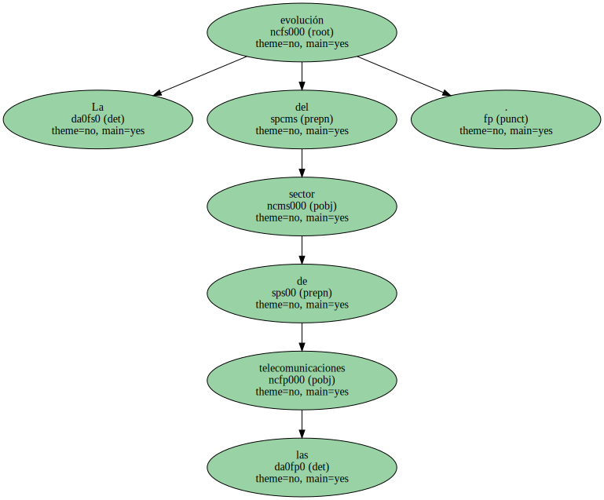La compañía alcanzó los 2,2 billones de facturación en el primer semestre.
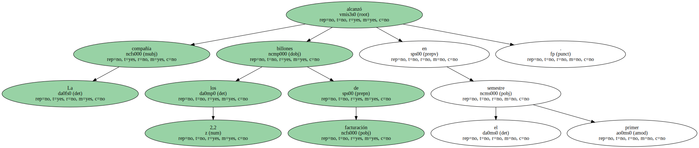La firma sube en bolsa el 7,4% pese a que sus beneficios han bajado el 3% Telefónica Móviles y Latinoamérica concentran la mitad de las ganancias.

El grupo Telefónica superó en los primeros seis meses del año los 2,2 billones de pesetas de ingresos , con un alza del 23,7% respecto al mismo periodo del año anterior , como consecuencia de la fuerte expansión en los mercados latinoamericanos y el crecimiento de Telefónica Móviles.
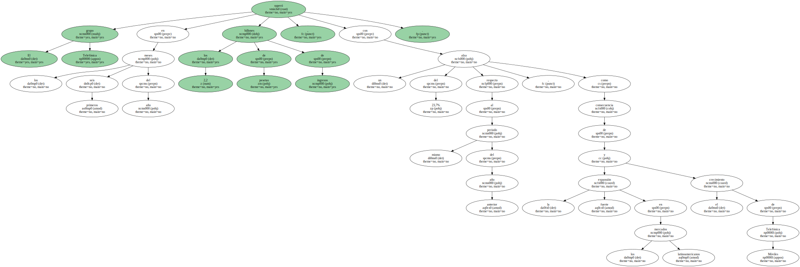Pese a este aumento de la facturación , los beneficios netos cayeron el 3% hasta 164.500 millones de pesetas.
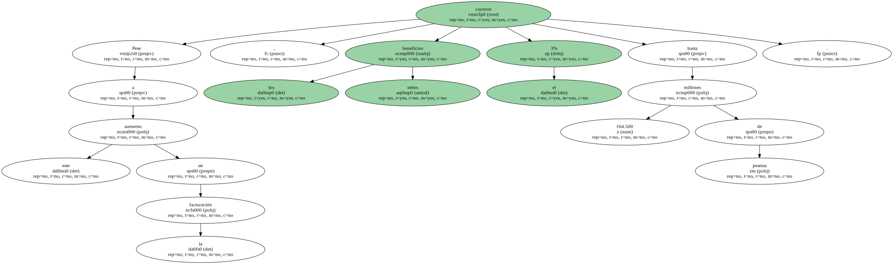La compañía remarcó que esta caída de ganancias se debió a que en el mismo periodo de 1999 se registraron ingresos extraordinarios ( unos 160.000 millones de pesetas ) por la salida a bolsa de TPI y la venta de Temasa.
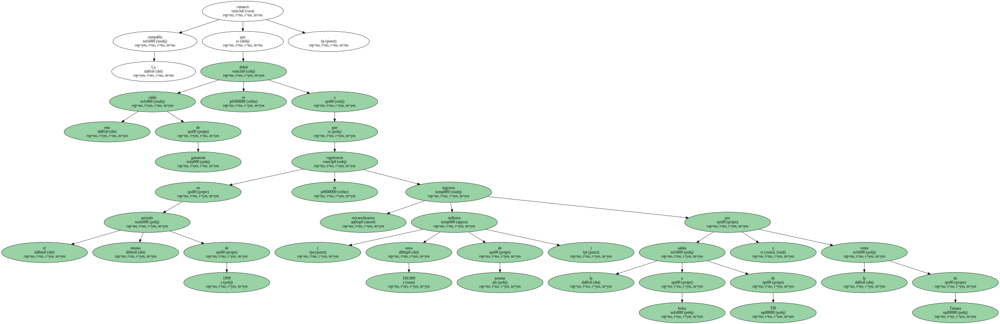Descontados ingresos extraordinarios , provisiones y el impacto negativo de los resultados de la filial Terra , los beneficios netos hubiesen aumentado el 27,2% , porcentaje superior al conseguido por otras operadoras europeas.

BT redujo sus ganancias netas el 39,9% hasta Junio , las de Deutsche Telekom cayeron el 28,4% y las de KPN bajaron el 104,5%.
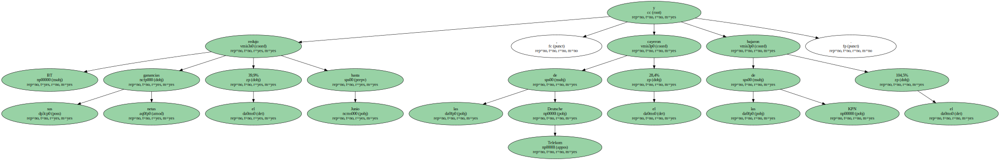Telefónica Móviles , cuyo beneficio neto creció el 44,2% y las filiales latinoamericanas , con un alza del 37,1% de las ventas , fueron los motores indiscutibles de la operadora , que se consolidó como apuesta estratégica de la compañía española , al conseguir entre ambas más de la mitad de los ingresos y de los beneficios.
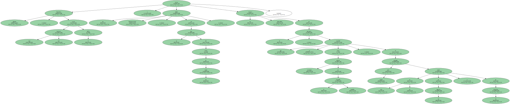Los mercados recibieron los resultados de Telefónica con subidas , ya que habían previsto una reducción de los beneficios de hasta el 6%.
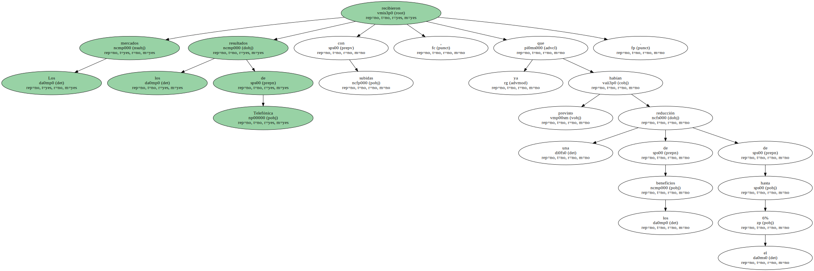Al cierre de la sesión , Telefónica subió el 7,45% y acumula una revalorización de 1,9 billones en una semana.
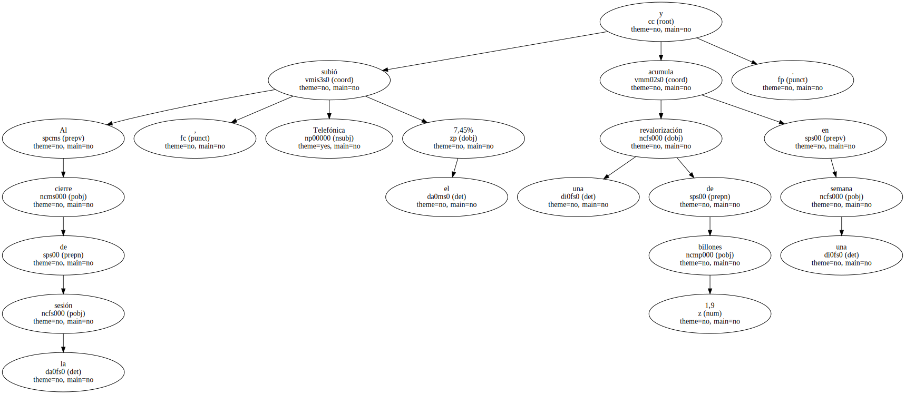Terra ha ganado el 32,7% en siete jornadas.
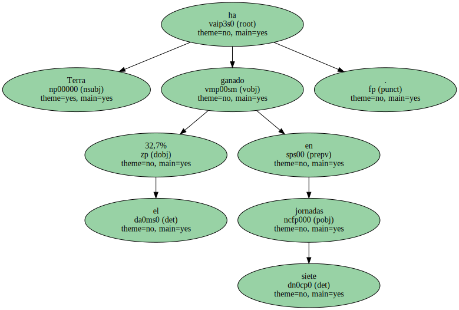En opinión de Cristina Urbano , analista de la sociedad GVC , " el castigo que han sufrido los valores tecnológicos durante los últimos seis meses hace prever un periodo de recuperación selectiva ".
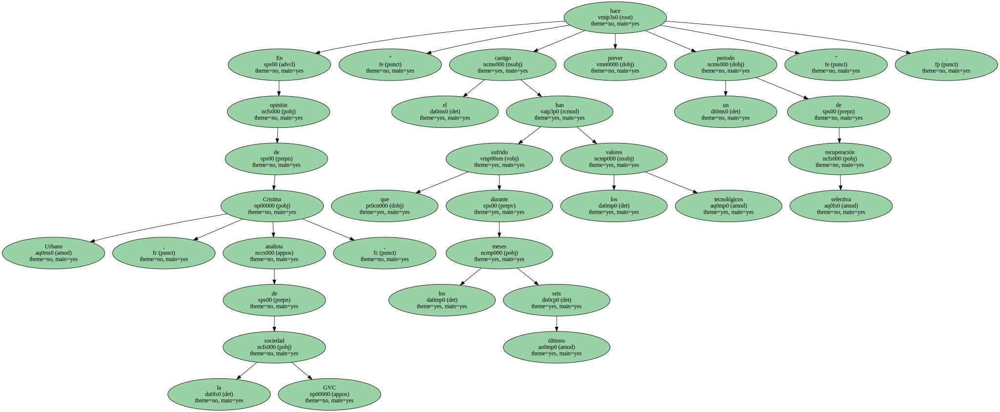Para Ana Molina , de Gaesco , el endeudamiento creciente de las operadoras de telecomunicaciones para alcanzar nuevas licencias introduce un cambio radical , ya que pasan a ser valores volátiles , con riesgo pero también perspectivas optimistas.
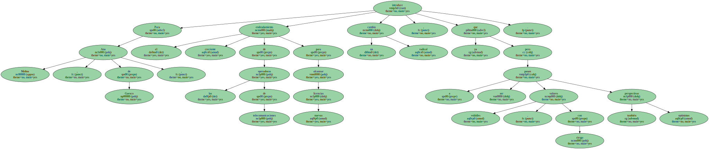Los analistas advierten de una creciente relación de las cotizaciones de Telefónica y Terra ( en proceso de ampliación de capital ).
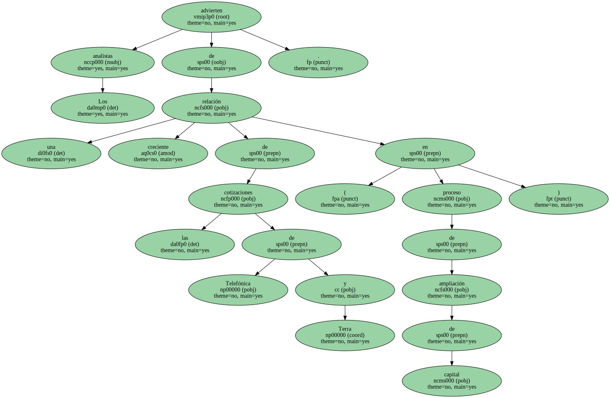Si la cotización de Terra alcanza los 62 euros , Telefónica se verá liberada de acudir a la ampliación , lo que se reflejará en su cotización.
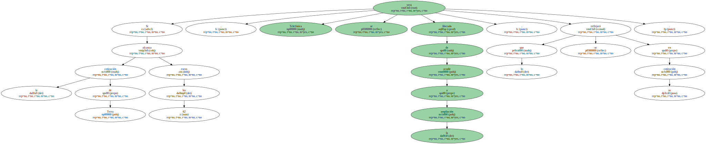